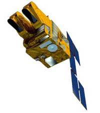
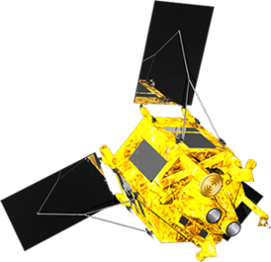

Pre-processed Earth Observation datasets designed to reduce preparation time and support faster, more consistent analysis.
SPOT Analysis-Ready Data (ARD) enables users to analyse and extract information from satellite datasets while reducing the burden of data pre-processing.
The analysis-ready dataset is standardised, harmonised, interoperable, radiometrically consistent (BRDF corrected), geometrically consistent, and conforms to commonly used ARD specifications for efficient and effective data analysis.
DESA’s ARD is derived from SPOT satellite scenes processed to a consistent standard, ready for analysis and integration.

Medium-to-high resolution data suitable for a wide range of thematic applications.

Higher-resolution imagery supporting mapping and monitoring at finer detail.
SPOT (Satellite Pour l’Observation de la Terre) satellites have provided medium to high-resolution data useful for various thematic applications since 1980s.
The SPOT ARD product is standardised, harmonised, interoperable, radiometrically (BRDF corrected) and geometrically consistent, and pre-processed to reduce the burden of data preparation for immediate analysis.
High-level overview of SPOT missions and typical specifications.
| Satellite | Bands | Spatial Resolution | Launched | Decommissioned |
|---|---|---|---|---|
| SPOT 2 | Pan, G, R, NIR | Pan (10m); MS (20m) | 22 January 1990 | July 2009 |
| SPOT 3 | Pan, G, R, NIR | Pan (10m); MS (20m) | 26 September 1993 | 14 November 1997 |
| SPOT 4 | Pan, G, R, NIR | Pan (10m); MS (20m) | 24 March 1998 | July 2013 |
| SPOT 5 | Pan, G, R, NIR, SWIR | Pan (2.5–5m); MS (10–20m) | 4 May 2002 | March 2015 |
| SPOT 6/7 | Pan, B, G, R, NIR | Pan (1.5m); MS (6m) | 9 Sep 2012 / 30 Jun 2014 | Operational |
A simplified timeline of key SPOT and Landsat missions that support the long-term Earth Observation archive used in DESA.
Provided medium-resolution Earth Observation imagery supporting early environmental monitoring and mapping.
Expanded continuity of SPOT imagery for land monitoring and thematic analysis.
Improved observation capability for vegetation, land cover, and environmental monitoring.
Delivered higher-quality imagery widely used for agriculture, planning, and natural resource applications.
Higher-resolution data supporting more detailed mapping, infrastructure analysis, and urban applications.
Raw satellite imagery is transformed into Analysis Ready Data through a structured workflow that improves consistency, usability, and interoperability.
Satellite sensors capture raw Earth Observation imagery over time.
Data is corrected for geometry, radiometry, and atmospheric effects.
Imagery is harmonised into consistent ARD specifications and formats.
Prepared datasets are loaded into DESA platforms and the Data Cube.
Users explore, analyse, and download ARD through services and tools.
Explore key datasets available through DESA. These cards can later connect to live metadata, downloads, or platform views.
Preprocessed SPOT imagery prepared for faster land analysis, planning, and environmental applications.
Long-term Earth Observation archive supporting land cover change, environmental monitoring, and historical analysis.
Structured ARD collections ingested into the DESA Data Cube for scalable analysis and decision support workflows.